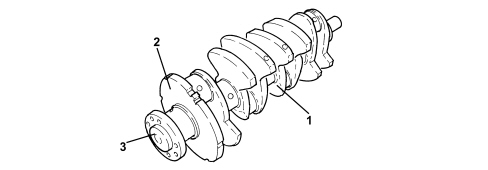

INTRODUCTION - CRANKSHAFT AND FLYWHEEL
- Path
- Descriptions > 10 ENGINE > 1024 CRANKSHAFT AND FLYWHEEL > INTRODUCTION - CRANKSHAFT AND FLYWHEEL
- Kind
- system description
- Applies to
- engines: 2.2; all production periods
- Interactive page
- https://sloeber94.github.io/elrnDB-fCrm/en/#/194002119
Applies to: engines: 2.2; all production periods
SPECIFICATIONS
Made from cast iron, the crankshaft is supported by five main journal bearings, supported by crankcase bearings with eight counter-weights.
The flywheel is fitted on the eighth counter-weight which, together with the rpm sensor, produces the signal for the speed of the crankshaft and the position of T.D.C.
The crankshaft is connected to the twin mass damping type flywheel described in ASSEMBLY 18 together with the clutch.

1. Crankshaft
2. Flywheel
3. Flange for flywheel attachment